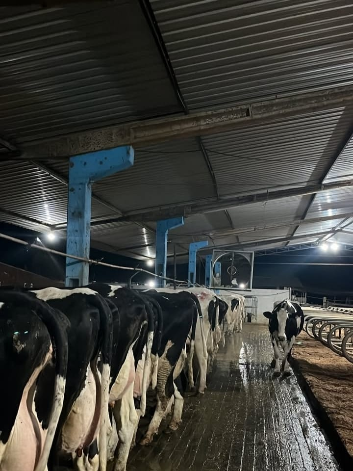
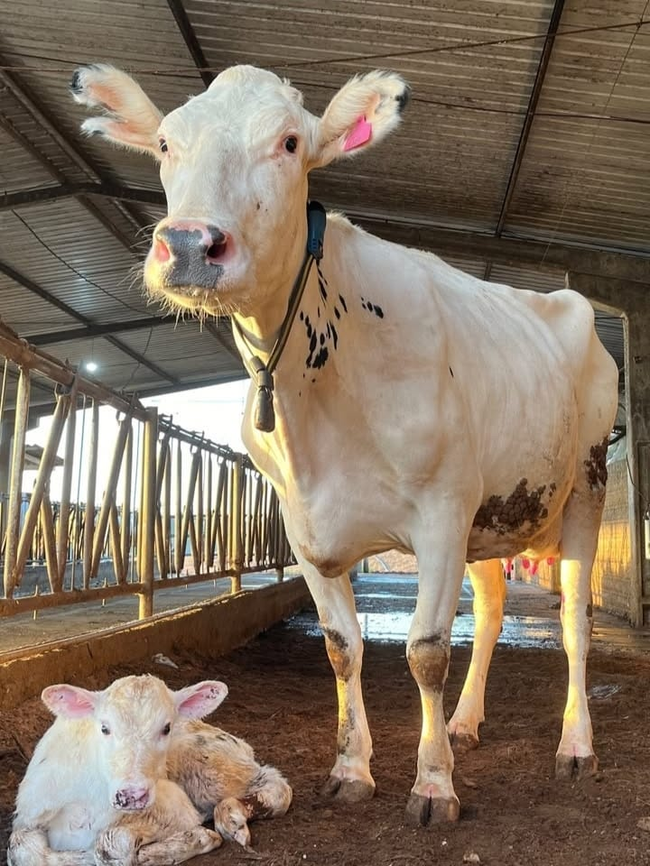

Produção Rural Sustentável
A produção rural sustentável busca o equilíbrio entre o aumento da produtividade e a preservação ambiental. Técnicas como o uso de adubação orgânica, rotação de culturas e integração lavoura-pecuária são exemplos de práticas que respeitam os limites do solo e dos recursos naturais.
Essa abordagem permite que as propriedades mantenham a produtividade por mais tempo, ao mesmo tempo que reduzem o impacto ambiental e promovem o bem-estar das famílias agricultoras.
A agricultura sustentável melhora a produtividade, protege os recursos naturais e fortalece as comunidades rurais, garantindo um futuro mais equilibrado para o campo.
Investir em práticas agrícolas responsáveis é essencial para conservar o solo, otimizar o uso da água e garantir alimentos de qualidade para as próximas gerações.
Tecnologia no Campo
O uso da tecnologia na produção rural vem revolucionando a forma de plantar, colher e gerir propriedades. Com o apoio de máquinas modernas, drones, sensores e softwares de monitoramento, os produtores conseguem otimizar o uso da água, fertilizantes e energia.
Essas inovações contribuem para um campo mais eficiente, produtivo e competitivo, promovendo o desenvolvimento rural com maior qualidade e sustentabilidade.
Além de aumentar a produtividade, a tecnologia permite um monitoramento mais preciso das condições do solo e do clima, facilitando a tomada de decisões estratégicas que reduzem desperdícios e aumentam a rentabilidade.
Com isso, os agricultores conseguem não apenas produzir mais, mas também preservar os recursos naturais, garantindo um futuro mais sustentável para as próximas gerações e fortalecendo a economia local.
